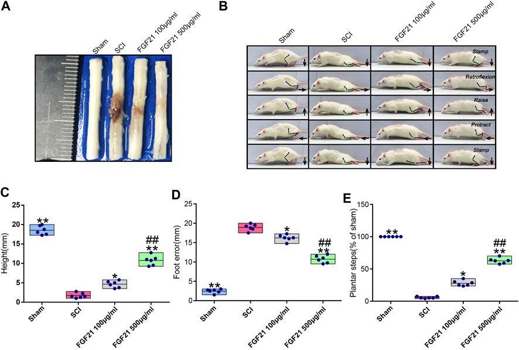

Representative Work
Nature aging
Published: 07 October 2021
GnRH pulse frequency and irregularity play a role in male aging
Latest Publications
Military
Medical
Research
July, 2023.
Medical
Research
July, 2023.
The marriage of immunomodulatory, angiogenic, and osteogenic capabilities in a piezoelectric hydrogel tissue engineering scaffold for military medicine
Ping Wu, Lin Shen, Hui-Fan Liu, Xiang-Hui Zou, Juan Zhao, Yu Huang, Yu-Fan Zhu, Zhao-Yu Li, Chao Xu, Li-Hua Luo, Zhi-Qiang Luo, Min-Hao Wu, Lin Cai, Xiao-Kun Li & Zhou-Guang Wang.

Bioactive
Materials
July 2021.
Materials
July 2021.
Frontiers
in
Pharmacology
January 2021.
in
Pharmacology
January 2021.

Molecular
Metabolism
February 2020.
Metabolism
February 2020.